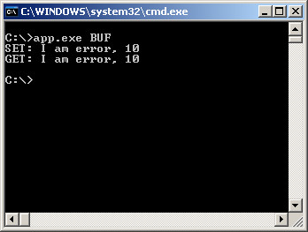
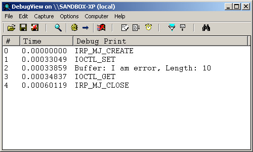

Steward
分享是一種喜悅、更是一種幸福
驅動程式 - Windows Driver Model (WDM) - 使用範例 - Assembly (MASM32) - Handle IOCTL IRP - Choose METHOD_BUFFERED
參考資訊：
https://wasm.in/
http://four-f.narod.ru/
https://github.com/steward-fu/ddk
main.asm
.386p
.model flat, stdcall
option casemap:none
include c:\masm32\include\w2k\ntstatus.inc
include c:\masm32\include\w2k\ntddk.inc
include c:\masm32\include\w2k\ntoskrnl.inc
include c:\masm32\include\w2k\ntddkbd.inc
include c:\masm32\Macros\Strings.mac
includelib c:\masm32\lib\wxp\i386\ntoskrnl.lib
public DriverEntry
MyDeviceExtension struct
szBuffer byte 255 dup(?)
pNextDev PDEVICE_OBJECT ?
MyDeviceExtension ends
IOCTL_GET equ CTL_CODE(FILE_DEVICE_UNKNOWN, 800h, METHOD_BUFFERED, FILE_ANY_ACCESS)
IOCTL_SET equ CTL_CODE(FILE_DEVICE_UNKNOWN, 801h, METHOD_BUFFERED, FILE_ANY_ACCESS)
.const
MSG_GET byte "IOCTL_GET",0
MSG_SET byte "IOCTL_SET",0
.code
IrpOpenClose proc pMyDevice : PDEVICE_OBJECT, pIrp : PIRP
IoGetCurrentIrpStackLocation pIrp
movzx eax, (IO_STACK_LOCATION ptr [eax]).MajorFunction
.if eax == IRP_MJ_CREATE
invoke DbgPrint, $CTA0("IRP_MJ_CREATE")
.elseif eax == IRP_MJ_CLOSE
invoke DbgPrint, $CTA0("IRP_MJ_CLOSE")
.endif
mov eax, pIrp
and (_IRP ptr [eax]).IoStatus.Information, 0
mov (_IRP ptr [eax]).IoStatus.Status, STATUS_SUCCESS
fastcall IofCompleteRequest, pIrp, IO_NO_INCREMENT
mov eax, STATUS_SUCCESS
ret
IrpOpenClose endp
IrpIOCTL proc uses esi edi pMyDevice : PDEVICE_OBJECT, pIrp : PIRP
local len : DWORD
and len, 0
mov eax, pMyDevice
mov eax, (DEVICE_OBJECT ptr [eax]).DeviceExtension
lea edi, (MyDeviceExtension ptr [eax]).szBuffer
mov eax, pIrp
push (_IRP ptr [eax]).AssociatedIrp.SystemBuffer
pop esi
IoGetCurrentIrpStackLocation pIrp
mov eax, (IO_STACK_LOCATION ptr [eax]).Parameters.DeviceIoControl.IoControlCode
.if eax == IOCTL_GET
invoke DbgPrint, offset MSG_GET
invoke strcpy, esi, edi
invoke strlen, edi
mov len, eax
.elseif eax == IOCTL_SET
invoke DbgPrint, offset MSG_SET
IoGetCurrentIrpStackLocation pIrp
push (IO_STACK_LOCATION ptr [eax]).Parameters.DeviceIoControl.InputBufferLength
pop len
invoke memcpy, edi, esi, len
invoke DbgPrint, $CTA0("Buffer: %s, Length: %d"), edi, len
.endif
mov eax, pIrp
mov (_IRP ptr [eax]).IoStatus.Status, STATUS_SUCCESS
push len
pop (_IRP ptr [eax]).IoStatus.Information
fastcall IofCompleteRequest, pIrp, IO_NO_INCREMENT
mov eax, STATUS_SUCCESS
ret
IrpIOCTL endp
IrpPnp proc pMyDevice : PDEVICE_OBJECT, pIrp : PIRP
local pDevExt : ptr
local szSymName : UNICODE_STRING
mov eax, pMyDevice
push (DEVICE_OBJECT ptr [eax]).DeviceExtension
pop pDevExt
IoGetCurrentIrpStackLocation pIrp
movzx eax, (IO_STACK_LOCATION ptr [eax]).MinorFunction
.if eax == IRP_MN_START_DEVICE
mov eax, pIrp
mov (_IRP ptr [eax]).IoStatus.Status, STATUS_SUCCESS
.elseif eax == IRP_MN_REMOVE_DEVICE
invoke RtlInitUnicodeString, addr szSymName, offset $CTW0("\\DosDevices\\MyDriver")
invoke IoDeleteSymbolicLink, addr szSymName
mov eax, pIrp
mov (_IRP ptr [eax]).IoStatus.Status, STATUS_SUCCESS
mov eax, pDevExt
invoke IoDetachDevice, (MyDeviceExtension ptr [eax]).pNextDev
invoke IoDeleteDevice, pMyDevice
fastcall IofCompleteRequest, pIrp, IO_NO_INCREMENT
ret
.endif
IoSkipCurrentIrpStackLocation pIrp
mov eax, pDevExt
invoke IoCallDriver, (MyDeviceExtension ptr [eax]).pNextDev, pIrp
ret
IrpPnp endp
AddDevice proc pMyDriver : PDRIVER_OBJECT, pPhyDevice : PDEVICE_OBJECT
local pMyDevice : PDEVICE_OBJECT
local szDevName : UNICODE_STRING
local szSymName : UNICODE_STRING
invoke RtlInitUnicodeString, addr szDevName, $CTW0("\\Device\\MyDriver")
invoke RtlInitUnicodeString, addr szSymName, $CTW0("\\DosDevices\\MyDriver")
invoke IoCreateDevice, pMyDriver, sizeof MyDeviceExtension, addr szDevName, FILE_DEVICE_UNKNOWN, 0, FALSE, addr pMyDevice
.if eax == STATUS_SUCCESS
invoke IoAttachDeviceToDeviceStack, pMyDevice, pPhyDevice
.if eax != NULL
push eax
mov eax, pMyDevice
mov eax, (DEVICE_OBJECT ptr [eax]).DeviceExtension
pop (MyDeviceExtension ptr [eax]).pNextDev
mov eax, pMyDevice
or (DEVICE_OBJECT ptr [eax]).Flags, DO_BUFFERED_IO
and (DEVICE_OBJECT ptr [eax]).Flags, not DO_DEVICE_INITIALIZING
invoke IoCreateSymbolicLink, addr szSymName, addr szDevName
.endif
.endif
ret
AddDevice endp
Unload proc pMyDriver : PDRIVER_OBJECT
ret
Unload endp
DriverEntry proc pMyDriver : PDRIVER_OBJECT, pMyRegistry : PUNICODE_STRING
mov eax, pMyDriver
mov (DRIVER_OBJECT ptr [eax]).MajorFunction[IRP_MJ_PNP * (sizeof PVOID)], offset IrpPnp
mov (DRIVER_OBJECT ptr [eax]).MajorFunction[IRP_MJ_CREATE * (sizeof PVOID)], offset IrpOpenClose
mov (DRIVER_OBJECT ptr [eax]).MajorFunction[IRP_MJ_CLOSE * (sizeof PVOID)], offset IrpOpenClose
mov (DRIVER_OBJECT ptr [eax]).MajorFunction[IRP_MJ_DEVICE_CONTROL * (sizeof PVOID)], offset IrpIOCTL
mov (DRIVER_OBJECT ptr [eax]).DriverUnload, offset Unload
mov eax, (DRIVER_OBJECT ptr [eax]).DriverExtension
mov (DRIVER_EXTENSION ptr [eax]).AddDevice, AddDevice
mov eax, STATUS_SUCCESS
ret
DriverEntry endp
end
完成

